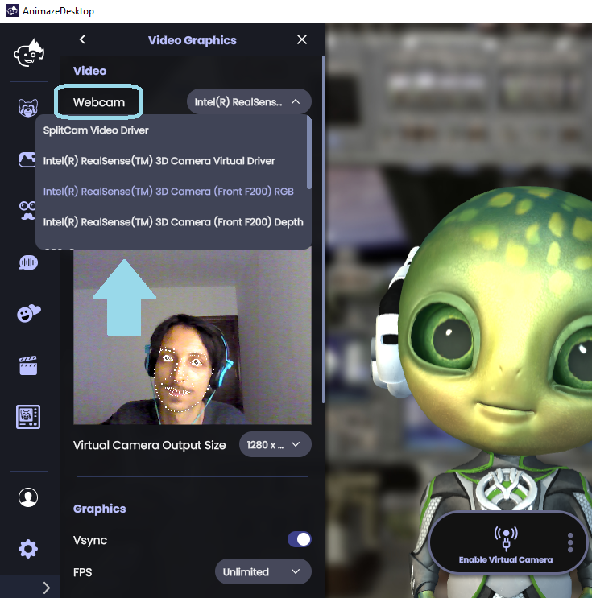
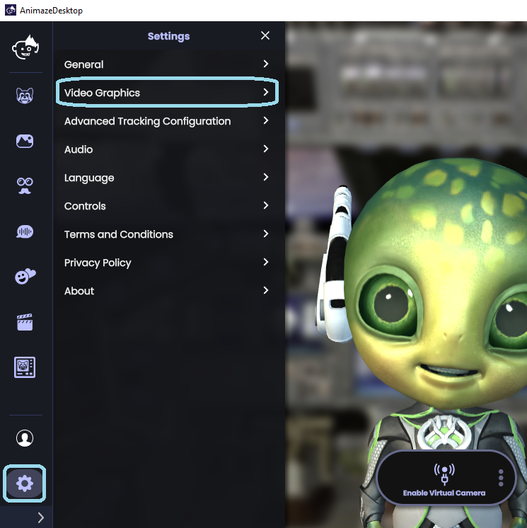
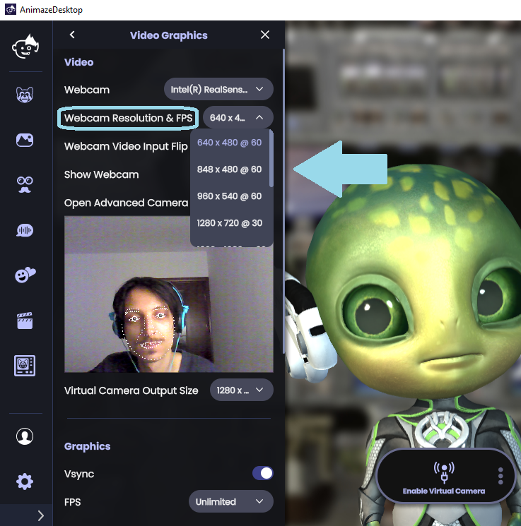
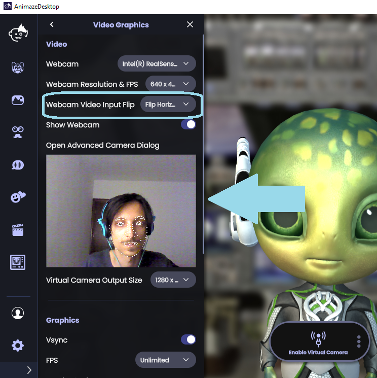
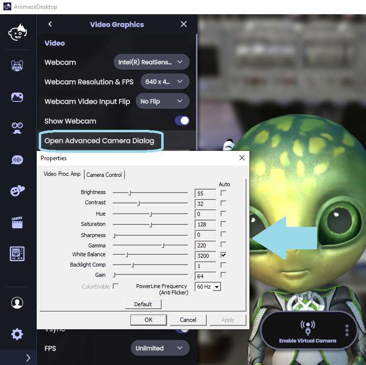

Webcam Tracker
Webcam tracking is the default face tracker in Animaze. Through your webcam, you can control the avatar’s face, head, and body movements. Set up and adjust your web camera settings in Animaze as follows:
-
Go to Settings > Video Graphics

-
If you have multiple web camera inputs installed (such as OBS Virtual Camera, ManyCam, SplitCam or another web camera), use the drop down list next to “Webcam”, to select your desired web camera

-
In the Video Graphics drawer menu, select the appropriate “Webcam Resolution & FPS” from the drop down list, keep in mind:
- We recommend favoring higher frame rates over higher resolutions. Higher resolutions will not necessarily produce better results, but will eat up more CPU. For example, a resolution setting of 640x480 @30 FPS will work, but a 720p resolution @60 FPS will likely have better results.

4. “Webcam Video Input Flip'' flips the input of your web camera. Flip your video input horizontally, vertically or diagonally, or not at all by selecting the “No Flip” option.

5. The “Show Webcam” toggle to open or close the webcamera feed in Animaze. Use the webcam feed to ensure you stay within the camera frame as exiting the frame may cause jerky movements or freezes.
6. “Advanced Camera Dialog” adjusts the brightness, contrast, hue, saturation, sharpness, gamma, white balance, backlight composition and gain of your web camera (NOTE: these changes be visiblet only in Animaze; your web camera’s settings won’t be changed globally).
- If you have a web camera capable of recording at 60 FPS but isn’t performing at 60 FPS in Animaze, follow this tutorial on how to set your webcam to record at 60 FPS through the “Advanced Camera Dialog” feature.
7. “Virtual Camera Output Size” selects the resolution of the video output through the Animaze Virtual Camera. 
- If you have a web camera capable of recording at 60 FPS but isn’t performing at 60 FPS in Animaze, follow this tutorial on how to set your webcam to record at 60 FPS through the “Advanced Camera Dialog” feature.
7. “Virtual Camera Output Size” selects the resolution of the video output through the Animaze Virtual Camera.